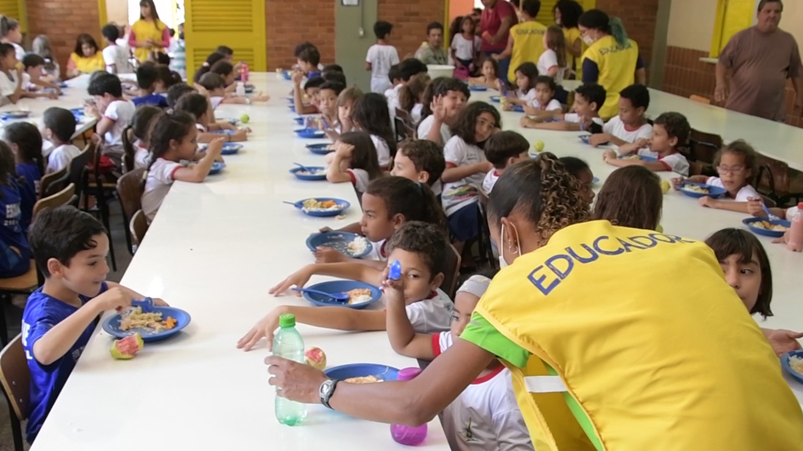

Conheça as principais frentes de atuação da Organização Solidária —
promovendo dignidade, inclusão e desenvolvimento comunitário.
Projeto Alimentação
Mutirão de entrega de cestas básicas em comunidades.
Este projeto atua na arrecadação e distribuição de alimentos para famílias em situação de vulnerabilidade social.
Além das doações, promovemos campanhas de conscientização sobre segurança alimentar e combate ao desperdício.
Distribuição semanal de cestas básicas;
Campanhas mensais de arrecadação;
Parcerias com mercados e ONGs locais.
Projeto Educação

Turmas de reforço escolar e oficinas educativas.
O Projeto Educação oferece reforço escolar, aulas de alfabetização de adultos e oficinas profissionalizantes.
Nosso objetivo é fortalecer a inclusão educacional e ampliar oportunidades de aprendizado.
Reforço escolar gratuito para alunos do ensino fundamental e médio;
Oficinas de leitura e escrita para adultos;
Parcerias com professores voluntários.
Projeto Moradia
Reformas e melhorias em moradias de famílias carentes.
O Projeto Moradia tem como foco melhorar as condições habitacionais de famílias de baixa renda.
Atuamos com reformas, pequenas construções e adequações para acessibilidade.
Mutirões de reforma com voluntários;
Fornecimento de materiais de construção doados;
Projetos de adaptação para pessoas com deficiência.